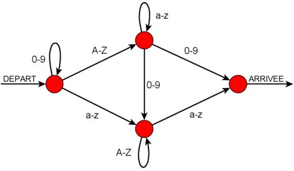
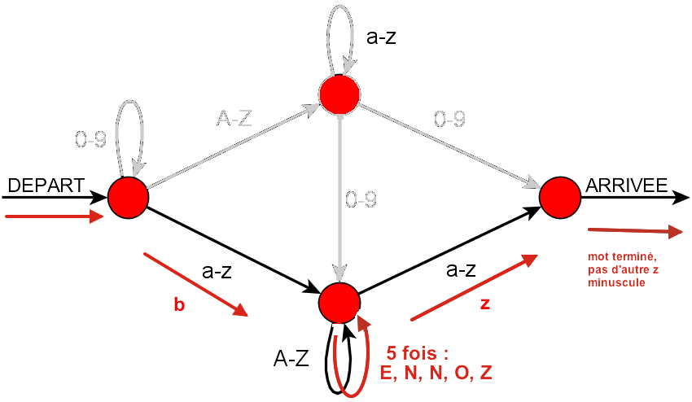

Pour utiliser les ordinateurs de son école, Castor doit inventer un mot de passe pour son compte d'utilisateur. Il peut utiliser des lettres minuscules sans accent, des lettres majuscules et les chiffres de 0 à 9. De plus, son mot de passe ne sera accepté que s'il respecte la règle de construction représentée par le schéma ci-dessous.

Ce schéma se lit comme suit : on part de la flèche "DEPART", puis on suit n'importe quel chemin jusqu'à la flèche "ARRIVEE". A chaque fois que l'on traverse une flèche, on ajoute : une lettre minuscule si la flèche est notée "a-z", une lettre majuscule si la flèche est notée "A-Z" ou un chiffre si la flèche est notée "0-9".
Par exemple, le mot de passe "Castor2m" respecte la règle de construction. Du départ, "C" est obtenu en traversant la flèche "A-Z" obliquant vers le haut à droite. Puis "a", puis "s", puis "t", puis "o", puis "r" sont obtenus en traversant 5 fois la boucle "a-z". Puis "2" est obtenu en traversant la flèche verticale "0-9". Puis "m" est obtenu en traversant la flèche "a-z", obliquant vers l'arrivée.
Castor hésite entre 4 mots de passe. Mais l'un d'entre eux ne respecte pas la règle de construction décrite par le schéma. Lequel ?
Le dessin ci-dessous montre qu'on ne peut pas construire le mot de passe "bENNOZzz" à l'aide du schéma de construction proposé, car on ne peut ajouter le dernier "z" minusucle.

Les trois autres mot de passe respectent la règle de construction :
Ce schéma de construction de mot de passe s'appelle un automate en informatique.
Les automates sont utiles pour nous aider à modéliser des problèmes afin de les résoudre. Ils sont notamment très utiles reconnaître un motif dans un texte, mais aussi pour simuler le fonctionnement de certains petits appareils (machine à café, distributeur de tickets, mais aussi les systèmes électroniques de voitures ou d'avions). Ils possèdent de nombreuses qualités théoriques et pratiques.